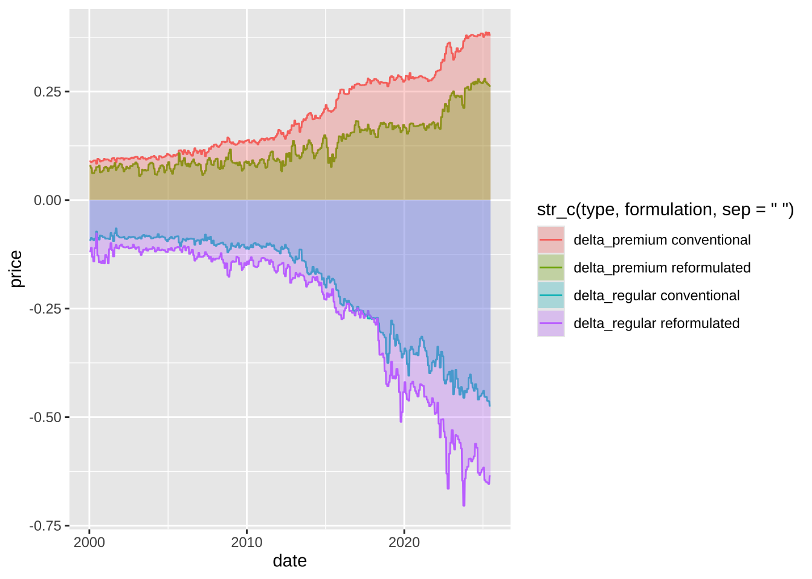
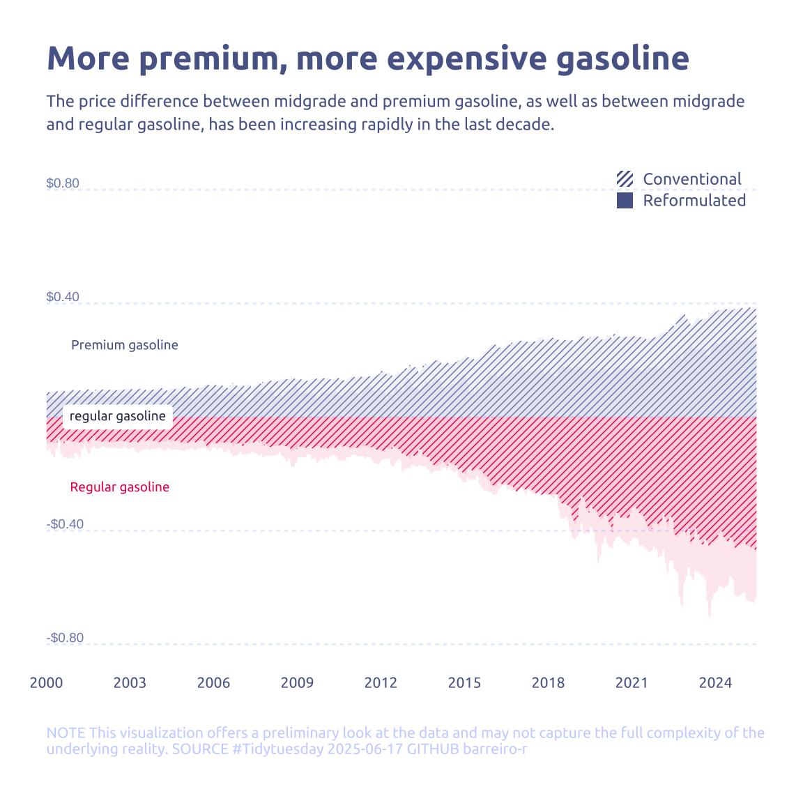

library(tidyverse)
library(glue)
library(scales)
library(showtext)
library(ggtext)
library(shadowtext)
library(maps)
library(ggpattern)
font_add_google("Ubuntu", "Ubuntu", regular.wt = 400, bold.wt = 700)
showtext_auto()
showtext_opts(dpi = 300)About the Data
Note
This week we’re exploring weekly US gas prices! The data comes from the U.S. Energy Information Administration (EIA), which publishes average retail gasoline and diesel prices each Monday. The original data (including additional datasets) can be found at eia.gov/petroleum/gasdiesel, and the weekly time series used here was downloaded from this XLS file.
Gas price methodology:
“Every Monday, retail prices for all three grades of gasoline are collected mainly by telephone and email from a sample of approximately 1,000 retail gasoline outlets. The prices are published around 5:00 p.m. ET Monday, except on government holidays, when the data are released on Tuesday (but still represent Monday’s price). The reported price includes all taxes and is the cash pump price paid by a consumer as of 8:00 a.m. Monday. This price represents the self-serve price except in areas having only full-serve. The price data from the sample are used to calculate volume-weighted average gasoline price estimates at the national, regional, and selected city and state levels for all gasoline grades and formulations.”
Diesel price methodology:
“Every Monday, cash self-serve on-highway diesel prices (including taxes) are collected from a sample of approximately 590 retail diesel outlets in the continental United States. The sample includes a combination of truck stops and service stations that sell on-highway diesel fuel. The data represent the price of ultra low sulfur diesel (ULSD), which contains less than 15 parts-per-million sulfur. All collected prices are subjected to automated edit checks during data collection and data processing. Data flagged by the edits are verified with the respondents. Imputation is used for companies that cannot be contacted and for reported prices that are extreme outliers. The average survey response rate for 2020 was 98%. Average national and regional prices are released around 5:00 p.m. ET on Mondays, except on government holidays, in which case the data are released on Tuesday (but still represent Monday’s price).”
1 Initializing
1.1 Load libraries
1.2 Set theme
cool_gray0 <- "#323955"
cool_gray1 <- "#5a6695"
cool_gray2 <- "#7e89bb"
cool_gray3 <- "#a4aee2"
cool_gray4 <- "#cbd5ff"
cool_gray5 <- "#e7efff"
cool_red0 <- "#A31C44"
cool_red1 <- "#F01B5B"
cool_red2 <- "#F43E75"
cool_red3 <- "#E891AB"
cool_red4 <- "#FAC3D3"
cool_red5 <- "#FCE0E8"
theme_set(
theme_minimal() +
theme(
# axis.line.x.bottom = element_line(color = '#474747', linewidth = .3),
# axis.ticks.x= element_line(color = '#474747', linewidth = .3),
# axis.line.y.left = element_line(color = '#474747', linewidth = .3),
# axis.ticks.y= element_line(color = '#474747', linewidth = .3),
# # panel.grid = element_line(linewidth = .3, color = 'grey90'),
panel.grid.major = element_blank(),
panel.grid.minor = element_blank(),
axis.ticks.length = unit(-0.15, "cm"),
plot.background = element_blank(),
plot.title.position = "plot",
plot.title = element_text(family = "Ubuntu", size = 18, face = 'bold'),
plot.caption = element_text(
size = 8,
color = cool_gray4,
margin = margin(20, 0, 0, 0),
hjust = 0
),
plot.subtitle = element_text(
size = 9,
lineheight = 1.15,
margin = margin(5, 0, 15, 0)
),
axis.title.x = element_markdown(
family = "Ubuntu",
hjust = .5,
size = 8,
color = cool_gray1
),
axis.title.y = element_markdown(
family = "Ubuntu",
hjust = .5,
size = 8,
color = cool_gray1
),
axis.text = element_text(
family = "Ubuntu",
hjust = .5,
size = 8,
color = cool_gray1
),
legend.position = "top",
text = element_text(family = "Ubuntu", color = cool_gray1),
plot.margin = margin(25, 25, 25, 25)
)
)1.3 Load this week’s data
weekly_gas_prices <- readr::read_csv('https://raw.githubusercontent.com/rfordatascience/tidytuesday/main/data/2025/2025-07-01/weekly_gas_prices.csv')2 Data analysis
How much data we have for all categories?
weekly_gas_prices |> count(fuel, grade, formulation)# A tibble: 15 × 4
fuel grade formulation n
<chr> <chr> <chr> <int>
1 diesel all <NA> 1632
2 diesel low_sulfur <NA> 96
3 diesel ultra_low_sulfur <NA> 960
4 gasoline all all 1682
5 gasoline all conventional 1596
6 gasoline all reformulated 1596
7 gasoline midgrade all 1596
8 gasoline midgrade conventional 1596
9 gasoline midgrade reformulated 1596
10 gasoline premium all 1596
11 gasoline premium conventional 1596
12 gasoline premium reformulated 1596
13 gasoline regular all 1813
14 gasoline regular conventional 1813
15 gasoline regular reformulated 1596Not so complete for diesel low_sulfur and ultra_low_sulfur.
When data started to be collected?
recording_range <-
weekly_gas_prices |>
group_by(fuel, grade, formulation) |>
filter(date %in% c(min(date), max(date))) |>
mutate(date_categ = if_else(date == min(date), 'min_date', 'max_date')) |>
select(-price)
recording_range |>
mutate(formulation = if_else(is.na(formulation), 'NA', formulation)) |>
ggplot(aes(x = date, y = str_c(fuel,grade,formulation, sep = ' '))) +
geom_line(linewidth = 4, color = cool_gray4, lineend = 'round') +
geom_point(aes(color = date_categ), show.legend = FALSE) +
scale_color_manual(values = c(min_date = "white", max_date = cool_gray2)) +
labs(x = "Date", y = NULL, title = "Fuel price per category")
3 Transform Data for Plotting
data2plot <-
weekly_gas_prices |>
filter(date > as.Date('2000-01-01')) |>
mutate(month = month(date)) |>
mutate(year = year(date)) |>
filter(fuel == 'gasoline') |>
group_by(fuel, grade, formulation, month, year) |>
mutate(price = mean(price, na.rm = TRUE)) |>
filter(grade != "all", formulation != "all") |>
ungroup() |>
pivot_wider(names_from = grade, values_from = price) |>
mutate(delta_premium = premium - midgrade, delta_regular = regular - midgrade) |>
pivot_longer(cols = c(delta_premium, delta_regular), names_to = 'type', values_to = 'price')4 Time to plot!
4.1 Before
data2plot |>
ggplot(aes(x = date, y = price)) +
geom_line(aes(color = str_c(type,formulation, sep = ' '))) +
geom_ribbon(aes(ymin = 0, ymax = price, fill = str_c(type,formulation, sep = ' ')), alpha = .3) +
theme_gray()
data2plot |>
mutate(formulation = str_to_sentence(formulation)) |>
ggplot(aes(x = date, y = price)) +
geom_text(
data = tibble(
price = c(-0.8, -0.4, 0.4, 0.8)
),
x = as.Date('2000-01-01'),
aes(label = scales::dollar(price), y = price),
color = cool_gray2,
size = 2.5,
hjust = 0,
vjust = -0.25,
) +
# geom_line(aes(color = str_c(type, formulation, sep = ' '))) +
geom_ribbon_pattern(
aes(
ymin = 0,
ymax = price,
pattern_fill = type,
pattern_spacing = formulation,
fill = type
),
alpha = .1,
pattern = "stripe",
pattern_color = NA,
# pattern_spacing = .01,
pattern_angle = 45
) +
scale_y_continuous(
limits = c(-0.82, 0.82),
breaks = c(-0.8, -0.4, 0, 0.4, 0.8),
label = scales::dollar
) +
scale_x_date(breaks = '3 years', labels = year, expand = c(0, 0, 0, 0)) +
scale_fill_manual(
values = c(delta_premium = cool_gray2, delta_regular = cool_red1)
) +
scale_pattern_fill_manual(
values = c(delta_premium = cool_gray2, delta_regular = cool_red1)
) +
scale_pattern_spacing_discrete(range = c(0.01, 100)) +
labs(
title = "More premium, more expensive gasoline",
subtitle = str_wrap(
"The price difference between midgrade and premium gasoline, as well as between midgrade and regular gasoline, has been increasing rapidly in the last decade.",
width = 90
),
pattern_spacing = NULL,
y = NULL,
x = NULL,
caption = str_wrap(
"NOTE This visualization offers a preliminary look at the data and may not capture the full complexity of the underlying reality. SOURCE #Tidytuesday 2025-06-17 GITHUB barreiro-r",
width = 110,
) |>
str_replace_all("@", "\n")
) +
annotate(
geom = "richtext",
label.color = NA,
label = "regular gasoline",
x = as.Date("2000-01-01"),
y = 0,
hjust = -.15,
vjust = .5,
size = 2.5,
family = "Ubuntu",
color = cool_gray0
) +
annotate(
geom = "richtext",
label.color = NA,
fill = NA,
label = "Premium gasoline",
x = as.Date("2000-01-01"),
y = 0.25,
hjust = -.15,
vjust = .5,
size = 2.5,
family = "Ubuntu",
color = cool_gray1
) +
annotate(
geom = "richtext",
label.color = NA,
fill = NA,
label = "Regular gasoline",
x = as.Date("2000-01-01"),
y = -0.25,
hjust = -.15,
vjust = .5,
size = 2.5,
family = "Ubuntu",
color = cool_red1
) +
guides(
pattern_fill = 'none',
fill = 'none',
pattern_spacing = guide_legend(
override.aes = list(
alpha = 1,
fill = cool_gray1,
pattern_alpha = 1,
pattern_fill = cool_gray3
)
)
) +
theme(
legend.position = c(1, 1),
legend.justification = c(1, 1),
legend.key.size = unit(0.3, 'cm'),
axis.text.y = element_blank(),
legend.key.spacing.y = unit(3, 'pt'),
plot.margin = margin(25, 25, 25, 25),
panel.grid.major.y = element_line(
color = cool_gray5,
linewidth = .5,
linetype = '22'
),
)